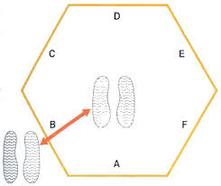

Perlengkapan :
- StopWatch
- Tester
- Testi
- Segi enam Ukuran 66 cm

Pelaksanaan :
- Atlet berdiri di tengah-tengah segi enam, menghadap Garis A
- Sebelum Tes dimulai atlet menghadap ke garis A
- Pada perintah GO stop watch dijalankan dan atlet melompat dengan kedua kaki melewati garis B dan kembali ke tengah, lalu melewati garis C kemudian kembali ke tengah lalu garis D dan seterusnya
- Ketika atlet melompati garis A dan kembali ke tengah, ini dihitung sebagai satu sirkuit
- Atlet harus menyelesaikan tiga sirkuit
- Setelah menyelesaikan tiga rangkaian stopwatch dihentikan dan waktu dicatat. Setelah melakukan rangkaian tes tersebut atlet istirahat, kemudian melaksanakan mengulangi rangkaian tes yang kedua. Pada pencatatan penilaian catatlah nilai yang tertinggi yang dapat dicapai oleh atlet. Jika atlet atau siswa melaksanakan tes yang melewati garis tidak sesuai ketentuan maka tes diulang
Cara melakukan
Sumber Youtube